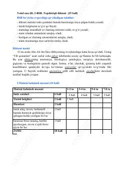

5O5-sinf ona tili fani bo'yicha 2-BSB uchun diktant va topshiriqlar to'plami.
Ushbu hujjat 5-sinf ona tili fani bo'yicha 2-bosqichli baholash (BSB) uchun mo'ljallangan topshiriqli diktant materiallarini o'z ichiga oladi. Unda o'quvchilarning imlo, tinish belgilari, husnixat va matn tahlili bo'yicha bilimlarini tekshirish uchun topshiriqlar hamda baholash mezonlari keltirilgan.